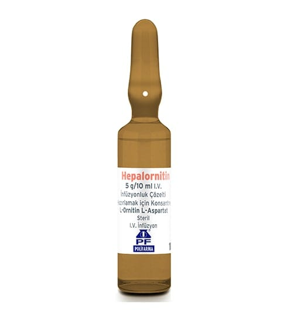

Hepalornitin 5 g/10 ml I.V. İnfüzyonluk Çözelti Hazırlamak İçin Konsantre, 10 Adet

Ne için kullanılır
KT · Bölüm 1HEPALORNİTİN, damar içine uygulanmak üzere hazırlanmış, L-ornitin L-aspartat adlı etken maddeyi içeren bir tıbbi üründür. 10 adet ampul içeren kutularda kullanıma sunulmaktadır. HEPALORNİTİN karaciğerde üre ve glutamin sentezini arttırarak amonyak uzaklaş tırılmasını sağlayan bir ilaçtır. Ayrıca, kas ve beyin dokularında da glutamin sentezi yoluyla amonyak uzaklaştırılması için önemlidir. HEPALORNİTİN, karaciğer yetmezliğinden kaynaklı farklı düzeydeki hareket ve zihinsel fonksiyon kayıplarının tedavisinde (latent ve belirgin hepatik ensefalopati) kullanılır.